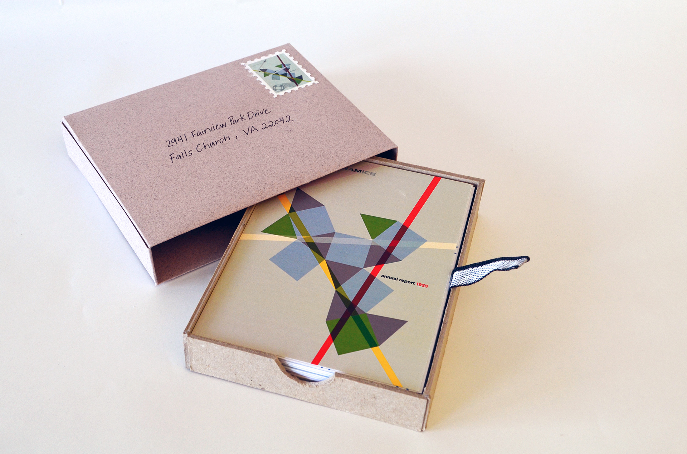

50 Iterations: General Dynamics Post Cards
Iterations of Erik Nitsche's cover design for General Dynamics Annual Report in 1955

There is an art to repeating a process. Inspired by Michael Bierut's 100 Day Challenge, this project challenges me to create an iteration of an old design everyday for 50 days.The design work that I exercise this practice with is Erik Nitsche's cover design for General Dynamics Annual Report in 1955. Nitsche is a designer from the 20th century, who has strong eyes for color and shapes. He often played with the juxtaposition of elements.

As simple as his designs look, Nitsche's style is hard to take on. His meticulous study of design elements is impressive and a different approach than what I'm used to. Throughout these 50 days, I was able to adopt his unique technique and make it my own.The final product became a collection of post cards. I handmade a slip-box and embellished with the original design Nitsche did as a stamp and the address of General Dynamics' headquarter.